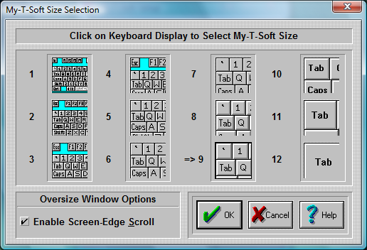

| My-T-Soft®: for Windows; Indestructible Keyboards and Indispensable Utilities; Version 1.80; User's Guide | ||
|---|---|---|
| Prev | Next | |

The size Dialog box allows you to select which size My-T-Soft will be displayed each time you start the program.
NOTE: This is not available if My-T-Soft is using a size larger than 12 (infinite sizing). For sizes larger than 12, you must use SzUp & SzDn from the My-T-Soft Control Panel.
Each of the 12 pictures show the approximate size of My-T-Soft. In order to select a size for My-T-Soft, do the following steps:
Click on the picture of the size you want My-T-Soft to be.
Press the OK Button.
If you do not want to save your changes, press the CANCEL button.
NOTE:
You can change My-T-Soft's size also directly from the My-T-Soft Control Panel or select a new size from the My-T-Soft Menu.
Oversize Window Options
Oversize refers to the state when the My-T-Soft window is wider than the screen display width. These are the options available here to accommodate the user.
Enable Screen-Edge Scroll
When the My-T-Soft window (keyboard display window) is larger than the actual display (e.g. My-T-Soft is wider than the screen width), select this option to enable the automatic scroll when the mouse pointer (cursor) is held at the edge of the screen. If My-T-Soft is off-screen at that edge, it will automatically scroll completely into view when this option is checked On.